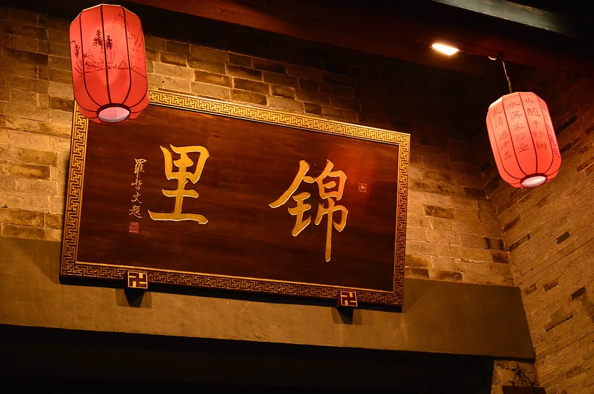
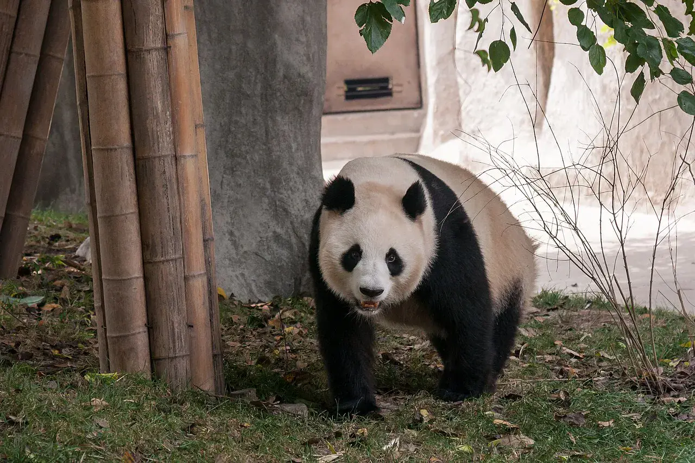
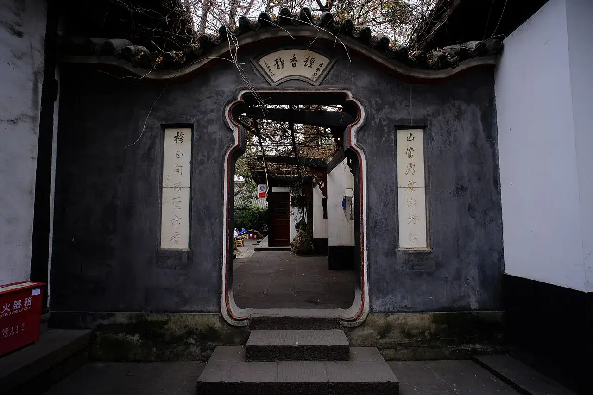
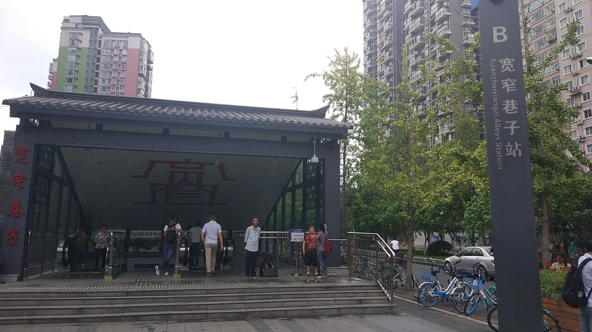
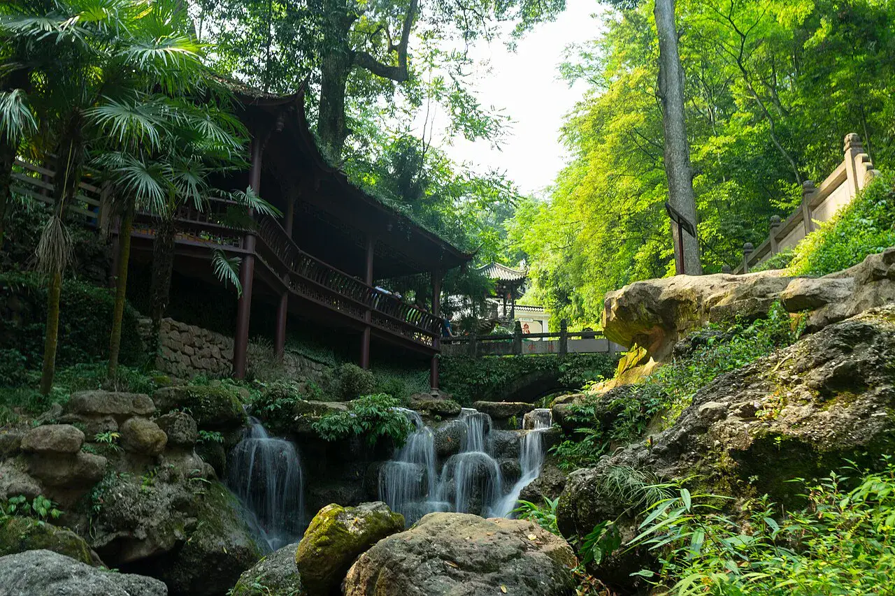
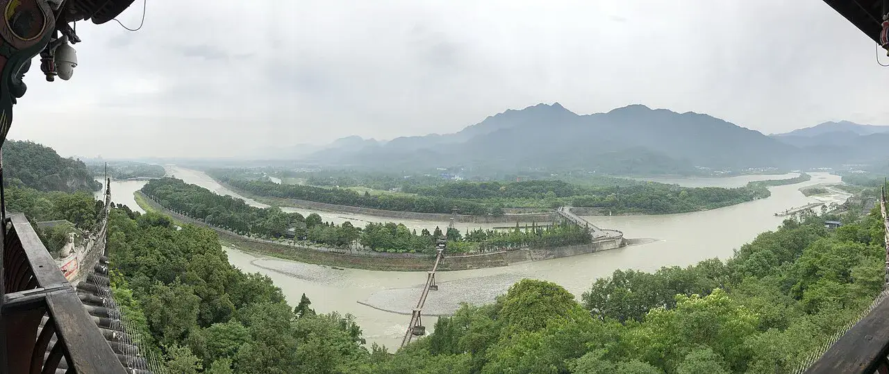

大熊猫卖萌 · 火锅飘香 · 茶馆慢生活2026年最新成都旅游攻略

成都是四川省会，以大熊猫、火锅、茶馆文化闻名。武侯祠、锦里、宽窄巷子、都江堰等景点吸引着无数游客。
成都最值得去的地方

离大熊猫最近的地方，可以看到各年龄段的熊猫，小熊猫活动区最受欢迎。早上熊猫最活跃。...
成都最古老的商业街，红灯笼、青石板、三国文化。小吃一条街，边逛边吃。...

中国唯一的君臣合祀祠庙，纪念诸葛亮和刘备。红墙竹影是成都最出片的打卡点。...

清朝古街改造的文化街区，宽巷子、窄巷子、井巷子各有特色。茶馆、小吃、文创店林立。...

道教名山，前山道教文化浓厚，后山自然风光优美。与都江堰联票更划算。...

两千年历史的水利工程，至今仍在使用。鱼嘴、飞沙堰、宝瓶口三大工程巧夺天工。...
成都特色美食推荐
成都灵魂美食，牛油锅底配毛肚、黄喉、鸭肠，麻辣鲜香。没有一顿火锅解决不了的事。...
成都版撸串，竹签串好各种食材，涮火锅吃。冷锅串串和热锅串串各有风味。...
成都名小吃，皮薄馅嫩，红油浇头甜中带辣。与北方水饺完全不同。...
成都街头最常见的面，芝麻酱+辣椒油+肉末，拌匀后香气扑鼻。...
交通·住宿·最佳时间·注意事项